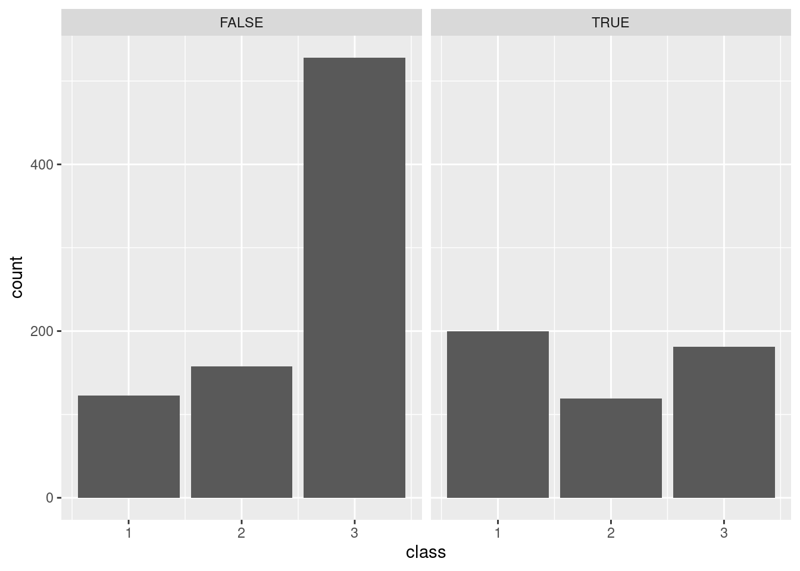

Lab 1 Exploring Data with R
In this session, we will learn a bit about data, how to get it into R, how to look at it, and a bit about how to make and explore our own data using simulation. This will largely involve copying and pasting code from this document into your own RStudio window and interpreting the results, though you will also have to make some tweaks to that code on your own. The big point is to get a feel for the power of the tools we will be learning to use in the rest of the semester.
For most of what we will be doing, this document shows both the R code and, below it, the result that code is expected to produce. The questions you will need to answer for the accompanying assignment are presented as numbered footnotes.
1.1 Skills
- Loading data into
R - Viewing data in
R - Making frequency tables
- Making bar charts and histograms
- Using
Rto simulate data
1.2 R and RStudio
All of our labs will make use of RStudio, a graphical interface to the statistical computing language R. The R language represents the current state of the art in both academic and industrial research. It is likely to remain relevant for many years to come because it is free and open-source, meaning both that it is widely accessible and that improvements and extensions are relatively easy to make. In fact, many of the best features of R that we will be using are extensions made by people outside the “core” development team for R. These extensions are called “packages,” and they represent bundles of code that are useful for doing statistics.
RStudio makes it easier to work with the R language, and it is also free and can be installed on computers running any modern operating system (Windows, Mac, Linux, etc.). RStudio is already installed on the computers in the Technology-Enhanced Classrooms and the Library Public Computing Sites on campus. If you are working on your own computer, you will have an easier time of it if you install RStudio on it. Installing RStudio also installs R, so you only need to do this once. Follow the installation instructions for RStudio Desktop here: https://rstudio.com/products/rstudio/download/
You can also use RStudio in a browser! This way, even if you don’t have access to a computer with RStudio installed locally, you can use it if you have access to the internet. You can run RStudio online here: https://rstudio.cloud/. The downside with this is that there is a cap to the amount of time you can spend using the online version, so you are better off using a local installation whenever possible.
1.3 Meet your data
The data we will be looking at are passenger records from the RMS Titanic, an oceanliner which famously sank on April 15, 1912. Though the liner was not filled to capacity, lax safety precautions—including a failure to carry enough lifeboats—meant that many of her passengers were unable to evacuate when the ship struck an iceberg and died.
1.3.1 Load the data
You can load the data into RStudio by going to File > Import Dataset > From text (readr)… and finding the “titanic.csv” file whereever you put it. If you are doing this using the online version of RStudio, you will first have to Upload the file to your workspace using the “Files” panel on the right.
1.3.2 Check out the variables
Loading the data in RStudio lets us look at the data in its “raw” form. Each row represents a specific passenger and each column represents a different variable. Based on the names of each variable and the types of values it seems to take, can you figure out what each variable is? In other words, what does each column tell us about a person?1
1.4 Answering questions with data
Now that we’ve gotten acquainted with the kind of data we have, we can begin using it to answer some questions. Recall that this involves making a model, something that simplifies the data and makes it easier to understand how it relates to our question. The two types of model we will explore today are frequency tables and histograms.
1.4.1 Making frequency tables for discrete variables
The first question is, who was actually aboard the Titanic? One way we could answer this question is to read the names of all 1300 or so people in our dataset, but this would not be particularly efficient or informative. What we are going to do instead is simplify, and focus on specific aspects of each person.
Let’s first ask how many passengers were male or female. One way to answer this question is by constructing a frequency table. Copy and paste the code below into the “Console” at the bottom of your RStudio screen. Then hit enter.
library(tidyverse)
titanic %>%
group_by(sex) %>%
summarize(n = n())## ── Attaching packages ─────────────────────────────────────── tidyverse 1.3.0 ──## ✓ ggplot2 3.3.3 ✓ purrr 0.3.4
## ✓ tibble 3.0.5 ✓ dplyr 1.0.3
## ✓ tidyr 1.1.2 ✓ stringr 1.4.0
## ✓ readr 1.4.0 ✓ forcats 0.5.0## ── Conflicts ────────────────────────────────────────── tidyverse_conflicts() ──
## x dplyr::filter() masks stats::filter()
## x dplyr::lag() masks stats::lag()## # A tibble: 2 x 2
## sex n
## * <chr> <int>
## 1 Female 466
## 2 Male 843The first thing we got was a bunch of text about attaching packages and conflicts. Eventually, we got a table that counted the frequency of males and females on the passenger list. We went from 1300 or so rows with multiple variables each to just two numbers. A pretty concise summary! But how did we do it?
- The first line (
library(tidyverse)) tellsRStudioto “load” a package called “tidyverse” from its “library” of code. “tidyverse” includes a lot of tools that are useful for statistics. When loading a package, it is common forRto tell you a lot about that package; that’s what that first bit of text was about, though for the time being we don’t need to focus on it.- Did something go wrong when you first tried running this bit of code? Chances are, this means the “tidyverse” package is not installed wherever you are using
RStudio. This is easy to fix by running the line of codeinstall.package("tidyverse").
- Did something go wrong when you first tried running this bit of code? Chances are, this means the “tidyverse” package is not installed wherever you are using
- The next set of lines takes our raw data and makes a frequency table by passenger sex, using the
%>%symbol to group them together:titanicis our original dataset;group_by(sex)tellsRto group that dataset by sex;summarize(n=n())tellsRto take our grouped dataset and summarize it by counting thenumber of people in each group and labeling the resulting number “n.”
Let’s try a few things to get a sense of why that code did what it did. What happens if we change n = n() in the last line to Number = n()?
titanic %>%
group_by(sex) %>%
summarize(Number = n())## # A tibble: 2 x 2
## sex Number
## * <chr> <int>
## 1 Female 466
## 2 Male 843Everything looks the same except that instead of the column being labeled “n,” it is labeled “Number.” So the bit before the equals sign is how the frequency table will be labeled.
Now let’s try something that seems like a small change: Instead of n = n() in the last line, let’s write n = m(). Only one letter different, surely it can’t be that big of a difference?
titanic %>%
group_by(sex) %>%
summarize(n = m())## Error: Problem with `summarise()` input `n`.
## x could not find function "m"
## ℹ Input `n` is `m()`.
## ℹ The error occurred in group 1: sex = "Female".R doesn’t like it! It reports an error because it doesn’t know what to do with m(). That’s because n() is a function, it is an instruction that tells R to count the number of something. On the other hand, m() doesn’t mean anything to R so it throws up its hands.
We saw that we know not just the sex of each passenger, the “residence” variable tells us whether each person is American, British, or something else. Let’s modify our code to get a frequency table for country of residence instead of sex:
titanic %>%
group_by(residence) %>%
summarize(n = n())## # A tibble: 3 x 2
## residence n
## * <chr> <int>
## 1 American 258
## 2 British 302
## 3 Other 749Easy! So all we need to do to get a frequency table for a particular variable is to put the name of that variable in the parentheses in the group_by line. Since we’re on a roll, let’s see if we can count the number of passengers with or without college degrees:
titanic %>%
group_by(degree) %>%
summarize(n = n())## Error: Must group by variables found in `.data`.
## * Column `degree` is not found.No dice! R tells us that it can’t find a column labeled “degree,” and indeed, there is no such variable in our data since it was not recorded. This illustrates that the variable in the parens in the group_by line can’t be just anything, it has to be the name of a variable (spelled exactly the same!) that exists in our data.
Finally, let’s construct a frequency table using multiple variables at once. This lets us answer questions like, how many British women were aboard the Titanic? We can put multiple variables in the group_by line:
titanic %>%
group_by(residence, sex) %>%
summarize(n = n())## `summarise()` has grouped output by 'residence'. You can override using the `.groups` argument.## # A tibble: 6 x 3
## # Groups: residence [3]
## residence sex n
## <chr> <chr> <int>
## 1 American Female 108
## 2 American Male 150
## 3 British Female 94
## 4 British Male 208
## 5 Other Female 264
## 6 Other Male 485Now we can begin to address a few more questions. This time, you will have to figure out how to fiddle with our code for making frequency tables. Write code that will produce the frequency table below:2
## `summarise()` has grouped output by 'class'. You can override using the `.groups` argument.## # A tibble: 6 x 3
## # Groups: class [3]
## class survived n
## <int> <lgl> <int>
## 1 1 FALSE 123
## 2 1 TRUE 200
## 3 2 FALSE 158
## 4 2 TRUE 119
## 5 3 FALSE 528
## 6 3 TRUE 181This table breaks down the number of people who did or did not survive the sinking of the Titanic by their “class,” with first-class being the most expensive with the most amenities and third-class being the least expensive with the least amenities. Do you notice any patterns? For example, were there more people in third class than first class? For which classes is the number of survivors more than the number who died?
1.4.2 Making bar charts for discrete variables
Trying to find patterns among six numbers in a frequency table is not impossible, but it’s also not easy. Let’s consider making it even harder by making a frequency table based on three variables: sex, class, and survival:3
## `summarise()` has grouped output by 'sex', 'class'. You can override using the `.groups` argument.## # A tibble: 12 x 4
## # Groups: sex, class [6]
## sex class survived n
## <chr> <int> <lgl> <int>
## 1 Female 1 FALSE 5
## 2 Female 1 TRUE 139
## 3 Female 2 FALSE 12
## 4 Female 2 TRUE 94
## 5 Female 3 FALSE 110
## 6 Female 3 TRUE 106
## 7 Male 1 FALSE 118
## 8 Male 1 TRUE 61
## 9 Male 2 FALSE 146
## 10 Male 2 TRUE 25
## 11 Male 3 FALSE 418
## 12 Male 3 TRUE 75In principle, if we thought about it enough, we could use this frequency table to answer questions not only about
titanic %>%
ggplot(aes(x = class)) +
facet_wrap(~survived) +
geom_bar()
For each variable in the dataset, say whether it is a) Discrete or Continuous; and b) what scale it is measured on (nominal, ordinal, interval, or ratio).↩︎
What code did you write to make a frequency table for number of people of each class who did or did not survive?↩︎
What code would produce this frequency table?↩︎